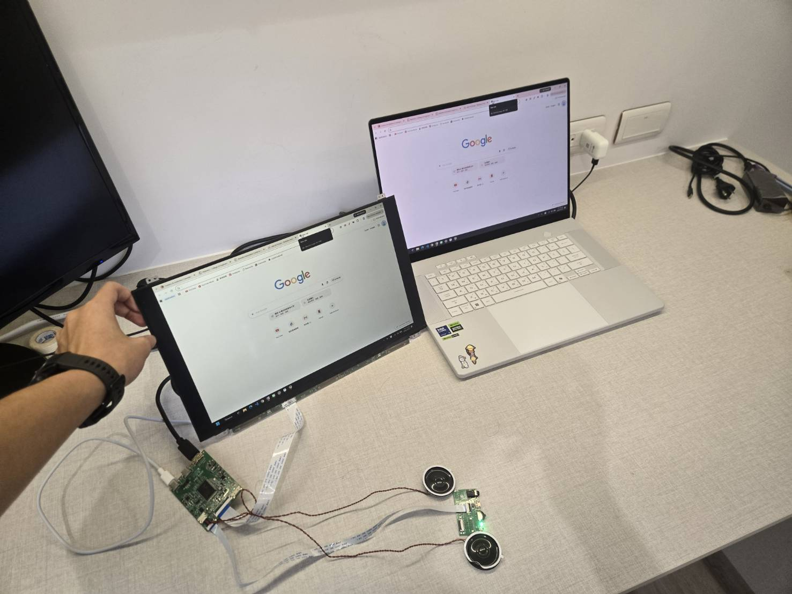
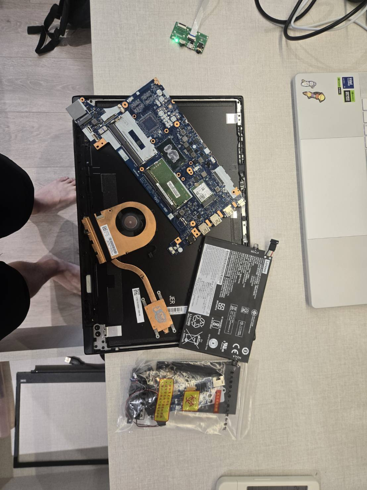
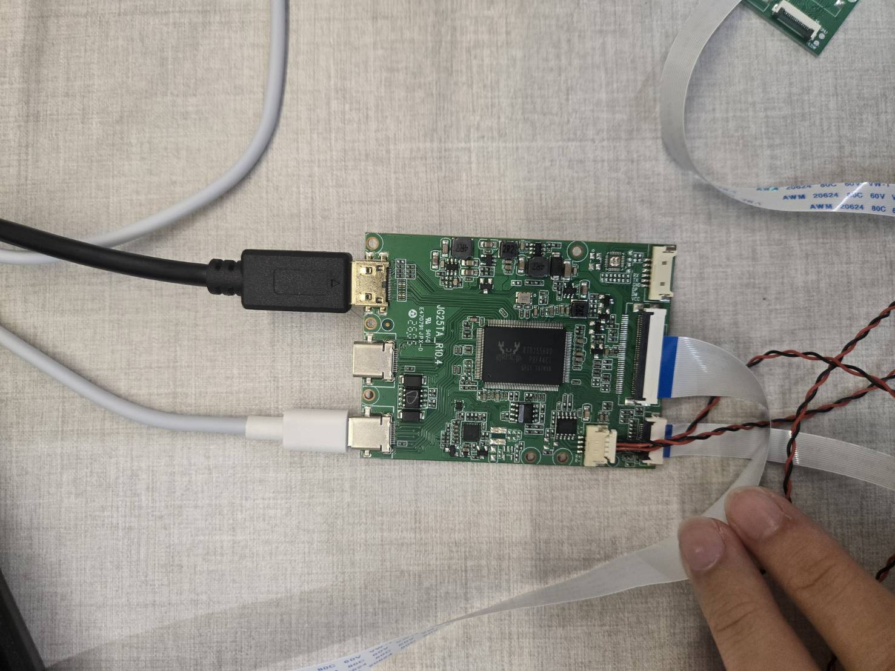
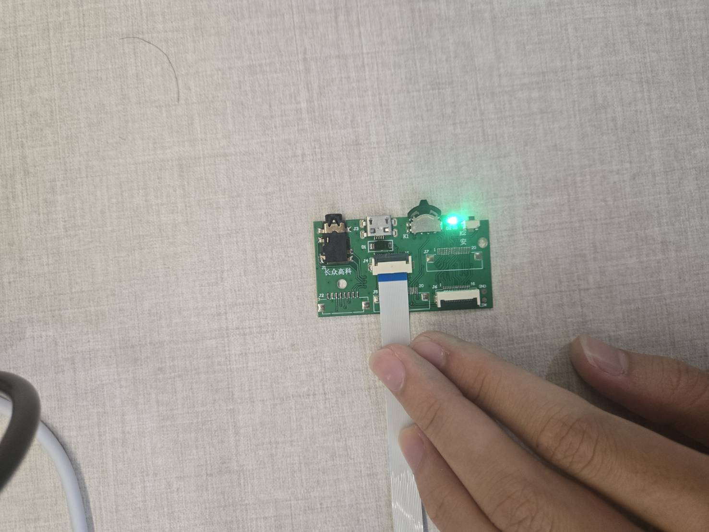
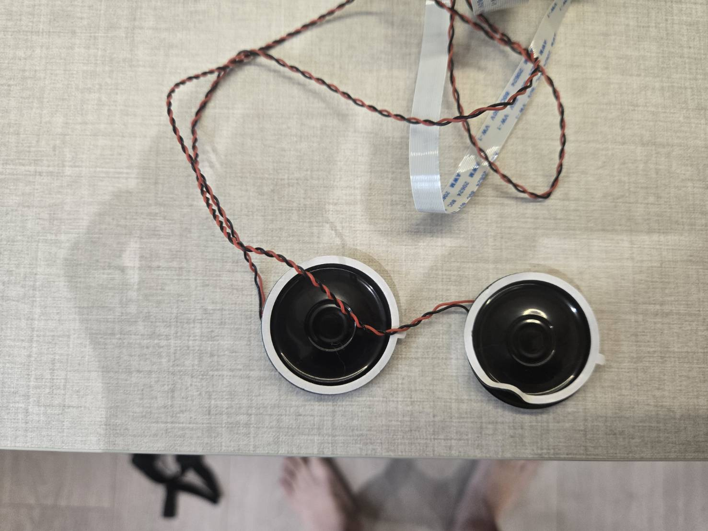
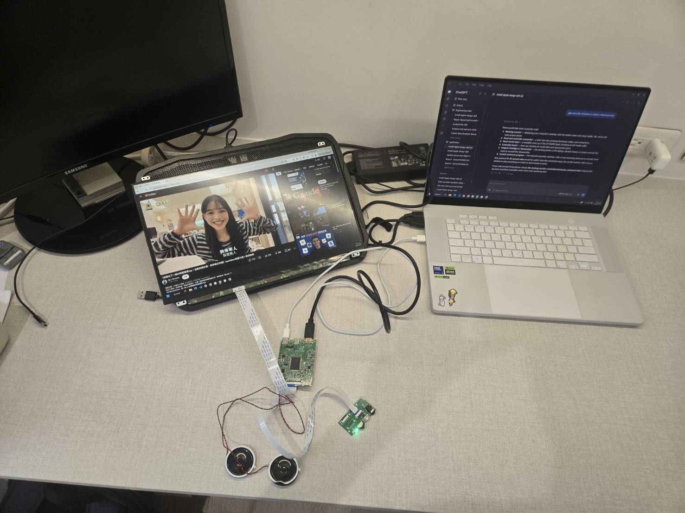

Working now
The recovered panel and purchased controller form a usable standalone display.
I took apart a broken ThinkPad, recovered its display panel, and connected a compatible controller board. It now works as a backup monitor.

I had a spare ThinkPad that no longer worked. Rather than discard the whole computer, I wanted to find out which parts I could recover and use on their own. The display became the focus of the project.
The main challenge was taking the laptop apart and figuring out which components were useful and reusable. I recovered the display panel and identified it as an LP156WF9, which gave me a specific panel to find a controller for.

I bought a controller board for the LP156WF9 panel and connected the recovered display to it. This let me use the screen independently of the original ThinkPad.



Disassemble and recover
Connect the recovered display
Works without the original laptop
Functional overview of the conversion.
The recovered screen now works as a backup monitor. The electrical conversion is functional; the custom enclosure remains unfinished.

The recovered panel and purchased controller form a usable standalone display.
A custom enclosure to complete the physical assembly.
This project made me look at a computer as a set of components rather than a single working or broken object. The useful work was learning how to take it apart, identify what could be reused, and find the additional hardware needed to give one part a new purpose.